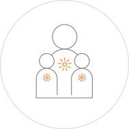

인재상
도전적인 한화인
기존의 틀에 안주하지 않고 변화와 혁신을 통해 최고를 추구한다.
맡은 분야에서 최고가 되기 위해 적극적인 자기개발을 한다. 열린 사고와 창의적 발상으로 새로운 방안과 기회를 찾아낸다. 할 수 있다는자신감으로 도전적인 목표를 설정하고 달성한다

DEDICATION
헌신적인 한화인
회사, 고객, 동료와의 인연을 소중히 여기며 보다 큰 목표를 위해 혼신의 힘을 다한다.
고객과 약속을 소중히 여기며 고객가치를 지속적으로 창출한다. 공동운명체의식을 바탕으로, 서로의 가능성을 믿고 협력한다.
진실된 한화인
자긍심을 바탕으로 원칙에 따라 바르고 공정하게 행동합니다.
눈 앞의 이익에 흔들리지 않고 원칙에 따라 정직하게 행동한다. 공과 사를 구분하여 능력과 성과에 따라 투명하고 공정하게 대우한다.